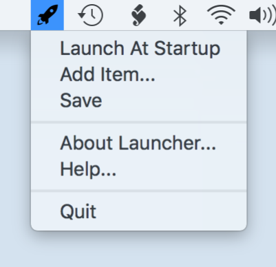

How to use Launcher?
The missing tool Apple didn't provide.
Add an Item
Adding and setting a global hotkey
Removing an Item
Removing unwanted items. Removing a global hotkey.
How Launcher works?
The specifics and tips for special cases.
Troubleshooting
What may go wrong and how to avoid issues.
Launcher Help
Launcher is easy to use. Most of its features are self-explanitory. Here is the application's main menu.
- Launch At Startup - When checked, Launcher will automatically start on booting up your computer.
- Add item... - Presents a Finder window to select a file or application. You can only select one item at a time.
- Save - Saves the current configuration. This is usually not necessary since Launcher automatically saves when it quits.
- About Launcher... - Presents who made this application and what version it is.
- Help... - Presents this help file.
- Quit - Exits the application.